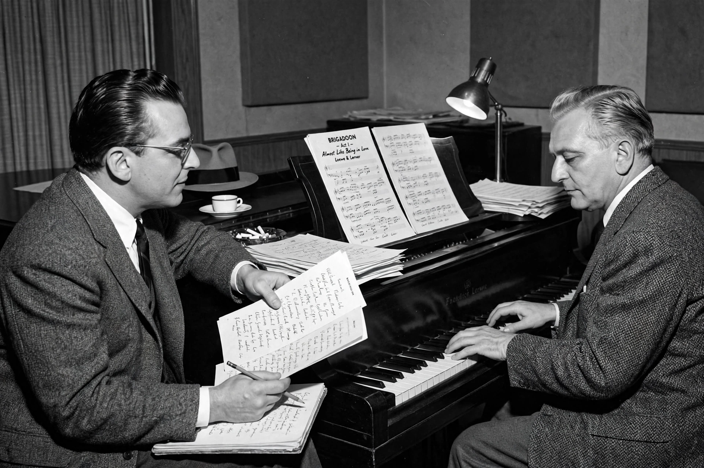

Lerner and Loewe refers to the partnership between lyricist and librettist Alan Jay Lerner and composer Frederick Loewe, one of the most successful writing teams in American musical theatre during the Golden Age of Broadway.

| Lerner and Loewe | |
|---|---|
| Members | Alan Jay Lerner; Frederick Loewe |
| Years active | 1942–1962 (later reunions) |
| Notable works | Brigadoon, My Fair Lady, Camelot, Gigi |
Their successes include Brigadoon (1947), Paint Your Wagon (1951), My Fair Lady (1956) — adapted from Shaw's Pygmalion and one of the most acclaimed musicals ever — the film Gigi (1958), which won nine Academy Awards, and Camelot (1960).
Lerner's literate lyrics and Loewe's Viennese-inflected melodies set a standard for the integrated book musical alongside Rodgers and Hammerstein. See My Fair Lady and Alan Jay Lerner.